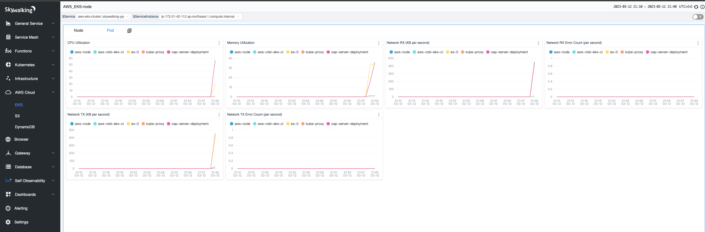

Monitoring AWS EKS and S3 with SkyWalking

SKyWalking OAP’s existing OpenTelemetry receiver can receive metrics through the OTLP protocol, and use MAL to analyze related metrics in real time. Starting from OAP 9.4.0, SkyWalking has added an AWS Firehose receiver to receive and analyze CloudWatch metrics data. This article will take EKS and S3 as examples to introduce the process of SkyWalking OAP receiving and analyzing the indicator data of AWS services.
EKS
OpenTelemetry Collector
OpenTelemetry (OTel) is a series of tools, APIs, and SDKs that can generate, collect, and export telemetry data, such as metrics, logs, and traces. OTel Collector is mainly responsible for collecting, processing, and exporting. For telemetry data, Collector consists of the following main components:
- Receiver: Responsible for obtaining telemetry data, different receivers support different data sources, such as prometheus, kafka, otlp.
- Processor: Process data between receiver and exporter, such as adding or deleting attributes.
- Exporter: Responsible for sending data to different backends, such as kafka, SkyWalking OAP (via OTLP).
- Service: Components enabled as a unit configuration, only configured components will be enabled.
OpenTelemetry Protocol Specification(OTLP)
OTLP mainly describes how to receive (pull) indicator data through gRPC and HTTP protocols. The OpenTelemetry receiver of SKyWalking OAP implements the OTLP/gRPC protocol, and the indicator data can be exported to OAP through the OTLP/gRPC exporter. Usually the data flow of a Collector is as follows:

Monitor EKS with OTel
EKS monitoring is realized through OTel. You only need to deploy OpenTelemetry Collector in the EKS cluster in the way of DaemonSet – use AWS Container Insights Receiver as the receiver, and set the address of otlp exporter to the address of OAP. In addition, it should be noted that OAP is used job_name : aws-cloud-eks-monitoring as the identifier of EKS metrics according to the attribute, so it is necessary to configure a processor in the collector to add this attribute.
OTel Collector configuration demo
extensions:
health_check:
receivers:
awscontainerinsightreceiver:
processors:
# To enable OAP to correctly identify EKS metrics, add the job_name attribute
resource/job-name:
attributes:
- key: job_name
value: aws-cloud-eks-monitoring
action: insert
# Specify OAP as exporters
exporters:
otlp:
endpoint: oap-service:11800
tls:
insecure: true
logging:
loglevel: debug
service:
pipelines:
metrics:
receivers: [awscontainerinsightreceiver]
processors: [resource/job-name]
exporters: [otlp,logging]
extensions: [health_check]
By default, SkyWalking OAP counts the network, disk, CPU and other related indicator data in the three dimensions of Node, Pod, and Service. Only part of the content is shown here.
Pod dimensions

Service dimensions

EKS monitoring complete configuration
Click here to view complete k8s resource configuration
apiVersion: v1
kind: ServiceAccount
metadata:
name: aws-otel-sa
namespace: aws-otel-eks
---
kind: ClusterRole
apiVersion: rbac.authorization.k8s.io/v1
metadata:
name: aoc-agent-role
rules:
- apiGroups: [""]
resources: ["pods", "nodes", "endpoints"]
verbs: ["list", "watch"]
- apiGroups: ["apps"]
resources: ["replicasets"]
verbs: ["list", "watch"]
- apiGroups: ["batch"]
resources: ["jobs"]
verbs: ["list", "watch"]
- apiGroups: [""]
resources: ["nodes/proxy"]
verbs: ["get"]
- apiGroups: [""]
resources: ["nodes/stats", "configmaps", "events"]
verbs: ["create", "get"]
- apiGroups: [""]
resources: ["configmaps"]
resourceNames: ["otel-container-insight-clusterleader"]
verbs: ["get","update"]
- apiGroups: ["coordination.k8s.io"]
resources: ["leases"]
verbs: ["create","get","update"]
---
kind: ClusterRoleBinding
apiVersion: rbac.authorization.k8s.io/v1
metadata:
name: aoc-agent-role-binding
subjects:
- kind: ServiceAccount
name: aws-otel-sa
namespace: aws-otel-eks
roleRef:
kind: ClusterRole
name: aoc-agent-role
apiGroup: rbac.authorization.k8s.io
---
apiVersion: v1
kind: ConfigMap
metadata:
name: otel-agent-conf
namespace: aws-otel-eks
labels:
app: opentelemetry
component: otel-agent-conf
data:
otel-agent-config: |
extensions:
health_check:
receivers:
awscontainerinsightreceiver:
processors:
resource/job-name:
attributes:
- key: job_name
value: aws-cloud-eks-monitoring
action: insert
exporters:
otlp:
endpoint: oap-service:11800
tls:
insecure: true
logging:
loglevel: debug
service:
pipelines:
metrics:
receivers: [awscontainerinsightreceiver]
processors: [resource/job-name]
exporters: [otlp,logging]
extensions: [health_check]
---
apiVersion: apps/v1
kind: DaemonSet
metadata:
name: aws-otel-eks-ci
namespace: aws-otel-eks
spec:
selector:
matchLabels:
name: aws-otel-eks-ci
template:
metadata:
labels:
name: aws-otel-eks-ci
spec:
containers:
- name: aws-otel-collector
image: amazon/aws-otel-collector:v0.23.0
env:
# Specify region
- name: AWS_REGION
value: "ap-northeast-1"
- name: K8S_NODE_NAME
valueFrom:
fieldRef:
fieldPath: spec.nodeName
- name: HOST_IP
valueFrom:
fieldRef:
fieldPath: status.hostIP
- name: HOST_NAME
valueFrom:
fieldRef:
fieldPath: spec.nodeName
- name: K8S_NAMESPACE
valueFrom:
fieldRef:
fieldPath: metadata.namespace
imagePullPolicy: Always
command:
- "/awscollector"
- "--config=/conf/otel-agent-config.yaml"
volumeMounts:
- name: rootfs
mountPath: /rootfs
readOnly: true
- name: dockersock
mountPath: /var/run/docker.sock
readOnly: true
- name: varlibdocker
mountPath: /var/lib/docker
readOnly: true
- name: containerdsock
mountPath: /run/containerd/containerd.sock
readOnly: true
- name: sys
mountPath: /sys
readOnly: true
- name: devdisk
mountPath: /dev/disk
readOnly: true
- name: otel-agent-config-vol
mountPath: /conf
- name: otel-output-vol
mountPath: /otel-output
resources:
limits:
cpu: 200m
memory: 200Mi
requests:
cpu: 200m
memory: 200Mi
volumes:
- configMap:
name: otel-agent-conf
items:
- key: otel-agent-config
path: otel-agent-config.yaml
name: otel-agent-config-vol
- name: rootfs
hostPath:
path: /
- name: dockersock
hostPath:
path: /var/run/docker.sock
- name: varlibdocker
hostPath:
path: /var/lib/docker
- name: containerdsock
hostPath:
path: /run/containerd/containerd.sock
- name: sys
hostPath:
path: /sys
- name: devdisk
hostPath:
path: /dev/disk/
- name: otel-output-vol
hostPath:
path: /otel-output
serviceAccountName: aws-otel-sa
S3
Amazon CloudWatch
Amazon CloudWatch is a monitoring service provided by AWS. It is responsible for collecting indicator data of AWS services and resources. CloudWatch metrics stream is responsible for converting indicator data into stream processing data, and supports output in two formats: json and OTel v0.7.0.
Amazon Kinesis Data Firehose (Firehose)
Firehose is an extract, transform, load (ETL) service that reliably captures, transforms, and serves streaming data into data lakes, data stores (such as S3), and analytics services.
To ensure that external services can correctly receive indicator data, AWS provides Kinesis Data Firehose HTTP Endpoint Delivery Request and Response Specifications (Firehose Specifications) . Firhose pushes Json data by POST
Json data example
{
"requestId": "ed4acda5-034f-9f42-bba1-f29aea6d7d8f",
"timestamp": 1578090901599
"records": [
{
"data": "aGVsbG8="
},
{
"data": "aGVsbG8gd29ybGQ="
}
]
}
- requestId: Request id, which can achieve deduplication and debugging purposes.
- timestamp: Firehose generated the timestamp of the request (in milliseconds).
- records: Actual delivery records
- data: The delivered data, encoded in base64, can be in json or OTel v0.7.0 format, depending on the format of CloudWatch data (described later). Skywalking currently supports OTel v0.7.0 format.
aws-firehose-receiver
aws-firehose-receiver provides an HTTP Endpoint that implements Firehose Specifications: /aws/firehose/metrics. The figure below shows the data flow of monitoring DynamoDB, S3 and other services through CloudWatch, and using Firehose to send indicator data to SKywalking OAP.

Step-by-step setup of S3 monitoring
- Enter the S3 console and create a filter for
Request metrics:Amazon S3 >> Buckets >> (Your Bucket) >> Metrics >> metrics >> View additional charts >> Request metrics
- Enter the Amazon Kinesis console, create a delivery stream,
SourceselectDirect PUT,DestinationselectHTTP Endpoint. And setHTTP endpoint URLtohttps://your_domain/aws/firehose/metrics. Other configuration items:
Buffer hints: Set the size and period of the cacheAccess keyjust matches the AccessKey in aws-firehose-receiverRetry duration: Retry periodBackup settings: Backup settings, optionally backup the posted data to S3 at the same time.

- Enter the CloudWatch console
Streamsand click Create CloudWatch Stream. AndSelect your Kinesis Data Firehose streamconfigure the delivery stream created in the second step in the item. Note that it needs to be setChange output formattoOpenTelemetry v0.7.0.

At this point, the S3 monitoring configuration settings are complete. The S3 metrics currently collected by SkyWalking by default are shown below:

Other service
Currently SkyWalking officially supports EKS, S3, DynamoDB monitoring. Users also refer to the OpenTelemetry receiver to configure OTel rules to collect and analyze CloudWatch metrics of other AWS services, and display them through a custom dashboard.